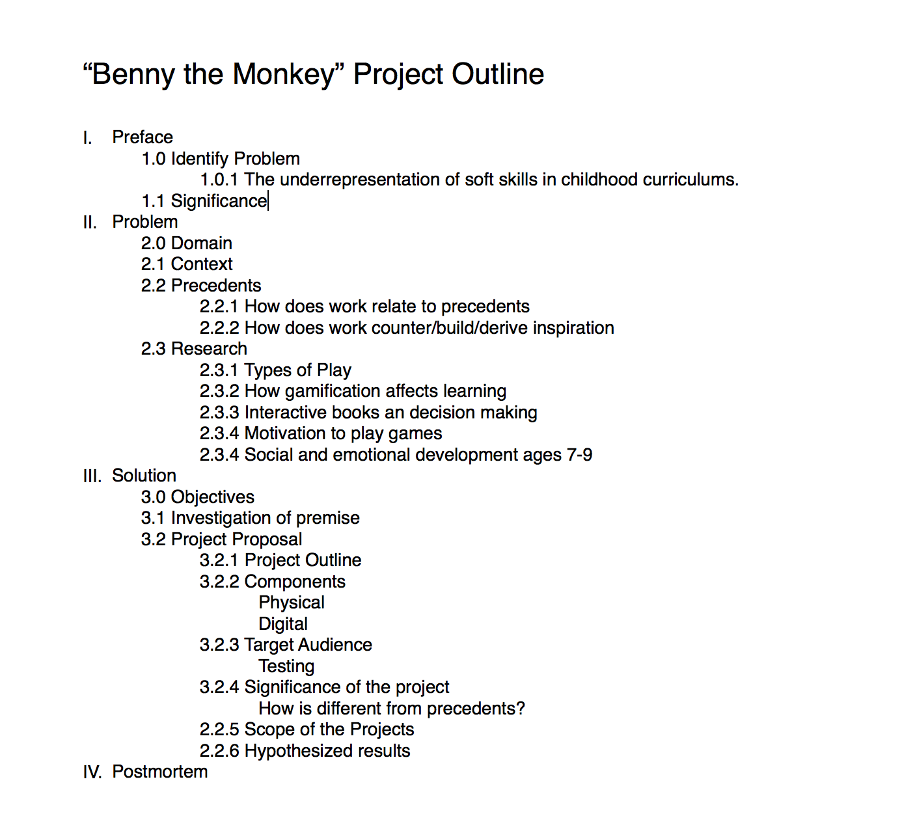
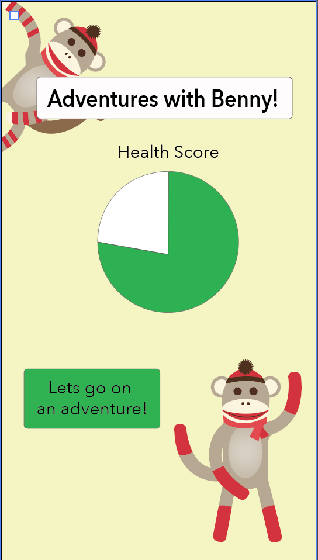
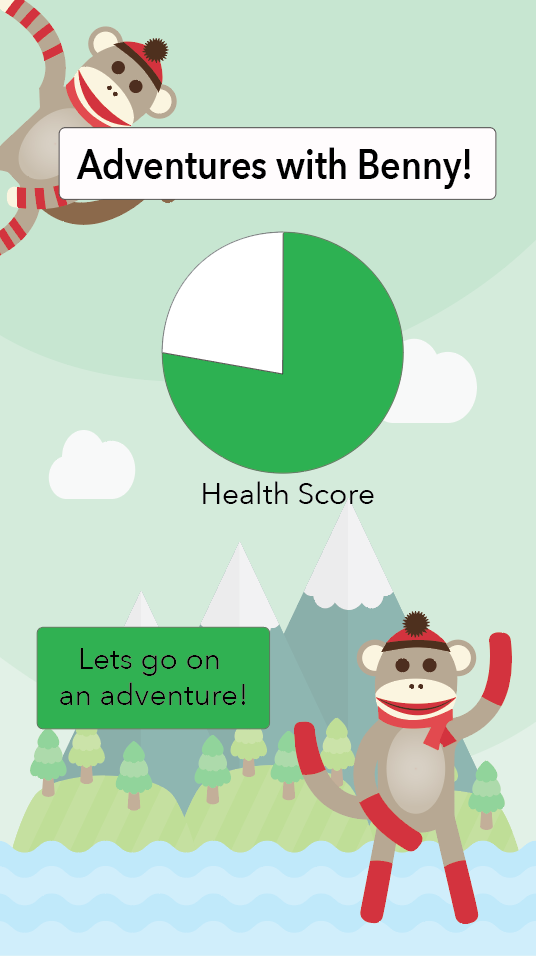
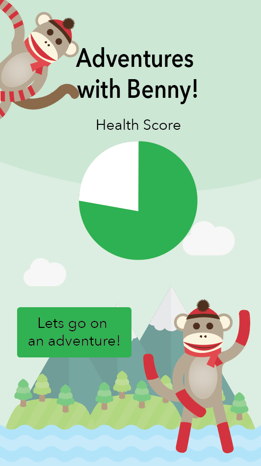

Week 2 Prototype-Aesthetics
For this week I wanted to figure out what the product would feel like - both on screen and off. In order to accomplish this I created the homepage the sketch, and began creating the physical prototype
Research Outline
I outlined my research paper to figure out what I was going to be focusing on solving. I found that it was very helpful in determining what areas to research. It was important that I began researching before designing, so that I could design with the user in mind.
After establishing my prelimary outline, I began to fill it in with research that I had collected, and to use it to think through my design process.
Physical Component
Due to the results of my user testing in week 1, I decided to go with a neutral colored stuffed animal to ensure gender neutrality. Sock monkeys share the texture of pink toy from week 1, and also are a more adult version of a stuffed animal.
In order to provide physical feedback when success is had on the application, I used littleBits.
First I worked on the basic functionality of littleBits. Little works in a very similar way to the arduino, and even has their own arduino board. The benefit to littleBits is that they are magnetic, so there is not soldering involved. Because none of the wires are exposed, they are safe for children, which is a very important component of creating a children's toy.
Next I connected the hardware to the sock monkey. I wanted to make sure that the feedback was strong enough to be felt through the animal. The vibration was strong, and it felt positive, not threatening or scary.
Lastly I connected a second feedback, or a light. More feedback is generally more encouraging, so having the toy light up and vibrate will be more exciting to the users.
After completing these iterations, I want to experiment with having an input. When the sock monkey is squeezed, perhaps it will provide feedback on the screen. THe purpose of this is to increase the interaction between the users and the different components.
Digital Component
I started with a layout including the basic components I would need. Benny the monkey should be visible so that the toy can be related to the app. An overall health pie chart is included to motivate users to play. When they have played enough games, the health chart will be at 100%.
To situate the type of adventures that Benny would be taking, I added a background that was realistic, but also different then the average daily life of the users. This was done in order to help foster imaginative play.
After completing the second iteration I sent the image to several friends. After recieving their feedback, I completed a third iteration of the homepage. I made stylistic changes in order to make the homepage more visually appealing.
